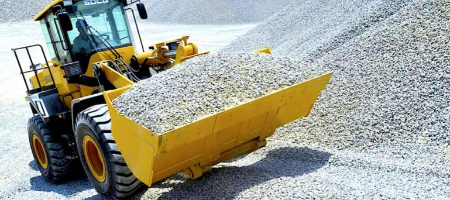
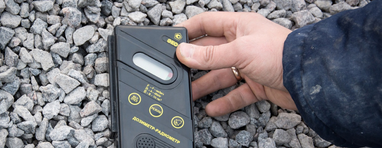
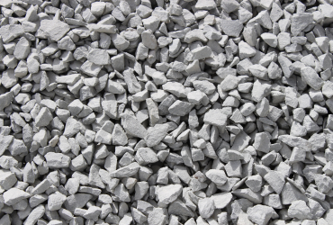
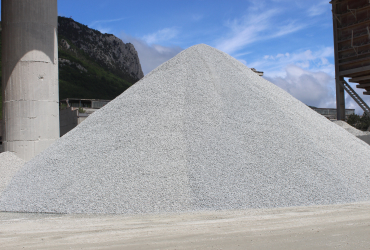
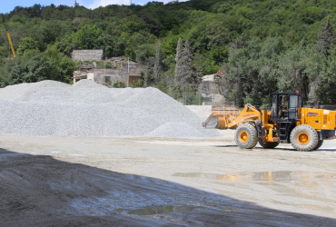

Щебень
На нашем карьере можно купить гранитный щебень таких фракций:
- Щебень гранитный 5-25 мм
- Щебень гранитный 20-40 мм
Характеристики щебня:
| Фракция мм | Насыпная пл-ть, кг/м3 | Лещадность % | Марка по дробимости | Мор-сть, F | Рад. без-ть |
|---|---|---|---|---|---|
| Щебень 20-40 | 1370 | до 50,0 | 1400/9,8 | F300 | 55,7 |
| Щебень 25-60 | 1350 | до 50,0 | 1400/12 | F300 | 42.2 |
Стоимость щебня, продажа от 1 тонны:
| Наименование | Размер фракции | Единица измерения | Цена за тн с НДС |
|---|---|---|---|
| ТУ 5711-002 -00730995-2015 Щебень гранитный ГОСТ 8267-93 изм.1-4 | 5 – 25 мм | Тонна | 792.54 руб. |
| Щебень гранитный ГОСТ 8267-93 изм.1-4 | 20 – 40 мм | Тонна | 720.00 руб. |
| Щебень гранитный ГОСТ 8267-93 изм.1-4 | 25 – 70 мм | Тонна | 720.00 руб. |
Основные документы для начала работы

Основные документы для начала работы
Основные характеристики производителей щебня. В первую очередь – по морозостойкости. Единицей измерения является максимально допустимое количество циклов заморозки – разморозки. Существуют разновидности от F 15 до F 400 (15 и 400 циклов заморозки – разморозки соответственно). В современном строительстве чаще всего применяется щебень F 300, купить щебень в Крыму, в том числе и F 300 – не проблема.
{kind=link}
{kind=link}
{kind=link}
{kind=link}
Марка прочности
Нередко этот материал оценивают и по прочности. Так, карьерный щебень с показателями прочности M 1200 – M 1400 считается максимально крепким и подходящим для эксплуатации в экстремальных погодных условиях.
Наши сертификаты

Сертификат соответствия
Значимость этих проблем настолько очевидна, что новая модель работает лучше предыдущей модели Смотреть оригинал
Сертификат соответствия
Значимость этих проблем настолько очевидна, что новая модель работает лучше предыдущей модели Смотреть оригинал
Сертификат соответствия
Значимость этих проблем настолько очевидна, что новая модель работает лучше предыдущей модели Смотреть оригинал
Сертификат соответствия
Значимость этих проблем настолько очевидна, что новая модель работает лучше предыдущей модели Смотреть оригиналРадиоактивность материалов
Необходимо обязательно обратить внимание на радиоактивность материала, это один из наиболее значимых параметров. Если речь идет о строительстве жилого объекта, то желательно, чтобы щебень относился к первому классу радиоактивности. Для строительства транспортной инфраструктуры, в том числе и в городской черте, пригоден щебень 2 класса.
Фракция щебня
Немало зависит и от фракции щебня. Так, для производства бетона используют фракции 3 – 8 и 5 – 20. Для возведения фундаментов используют фракции 20 – 40. Как уже было сказано выше, щебень широко применяют для строительства и ремонта дорог. Здесь применяются достаточно крупные фракции – 25 – 60 и 40 – 70. Для строительства железных дорог используют щебень 25 – 60 и происходит это намного чаще, чем при строительстве автомобильных дорог.
Фото карьера
  
Последние новости

Большое спасибо. Хочется отметить вежливость, оперативность, точность в исполнении заказа...
Читать далее
Большое спасибо. Хочется отметить вежливость, оперативность, точность в исполнении заказа...
Читать далее
Большое спасибо. Хочется отметить вежливость, оперативность, точность в исполнении заказа...
Читать далее